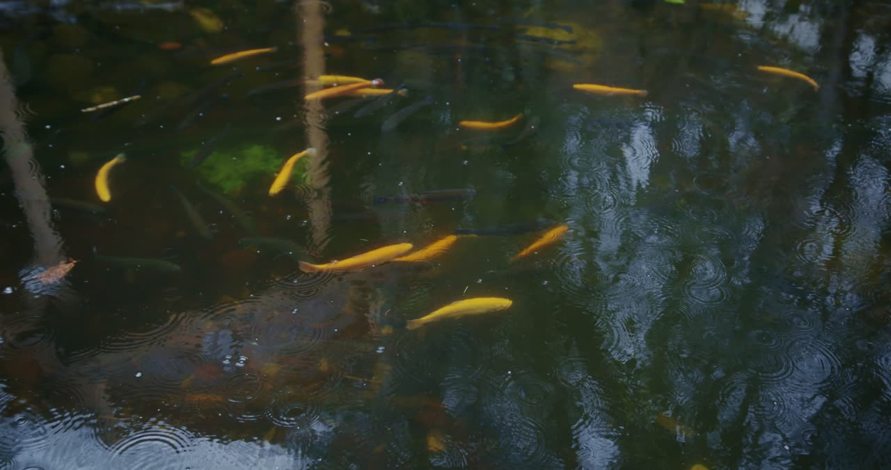

Ponds
Catch the Dawn Low
Oxygen is read every few minutes overnight, when ponds run out of it and nobody is on site.
Aerate Only When Needed
The float switches the aerator on as oxygen falls and leaves it off when the water is fine, which saves power.
See a Bloom Coming
Turbidity and the swing between day and night oxygen show an algae bloom building days before it crashes.
One Float per Pond
No poles, no cables across the bank. Move it to the next pond when you restock.